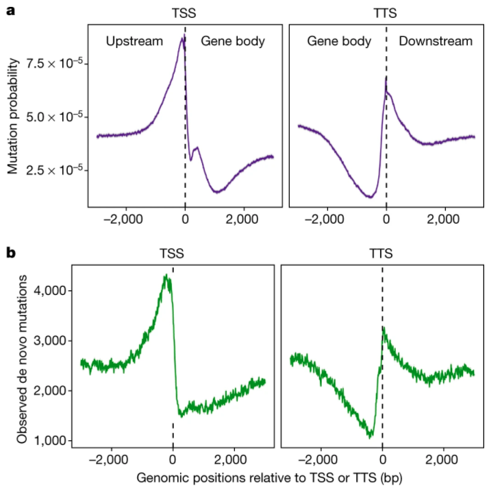

Evo GoodReads
Digestible synopses of recent scientific articles about evolution.
Browse the archives!
Gene family evolution and paralog divergence contributes to the evolution of cellular diversity
Read the Evo GoodReads digest!
To gain insight into the evolutionary underpinnings of cell-type diverity in vertebrates, researchers constructed
single-cell atlas using RNA-sequencing of hypothalamic cells from zebrafish as well as surface and cave
morphs of Mexican tetra. These results uncover evolutionary processes contributing to cellular diversity.
Shafer, et al. (2022).
Nature Ecology and Evolution doi:10.1038/s41559-021-01580-3.
Are mutations random? These results suggest they aren't!

Read the Evo GoodReads digest!
Evolutionary theory suggests that mutations occur randomly with respect to consequences. This idea is tested using
using surveys of de novo mutations. Lower mutation rates in gene bodies challenge this notion and suggest
mutations may not be so random.
Monroe, et al. (2022).
Nature doi:10.1038/s41586-021-04269-6.